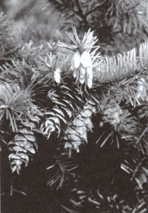

Whether you plant a single tree or a mighty forest, you'll find pleasure and satisfaction in..
WE'VE ALL HEARD THE OLD SAW "MIGHTY oaks from tiny acorns grow." Well, those sighing, whispering conifer forests that still cover much of North America sprang from humble beginnings, too-the beautiful and useful trees, however, have a hard time getting started on their own.
That doesn't mean that evergreens are necessarily difficult to grow. With a little patience and a dollop of knowledge, there's no reason why you can't have the pleasure and satisfaction of raising your own trees from seed.
The trick to growing conifers (a group including pine, spruce, fir, and other narrow-leaved evergreens) lies in understanding how best to work in harmony with nature to first sprout the seeds and then to protect the delicate young plants from disease. As you likely know, conifer seeds (some of which are as large as a quarter inch in diameter, while others are minute) are tucked between the scales of cones. The best time to gather them is in the fall, when the fibrous "petals" at the base of the woody husks have begun to open, indicating ripeness. Simply pick or clip off some cones and place them in a dish. As they dry, the seeds should loosen and drop out, though occasionally a stubborn piece of "fruit" will have to be dismantled in order to get at the nuggets within.
At this point, your chances of success will be much improved if you take the time to understand how Mother Nature goes about reproducing conifers. The seeds of evergreens don't sprout as readily as, say, garden-variety marigolds. Nature, you see, must protect her future forests from such catastrophes as fire, drought, and disease-and does so by means of stratagems that prevent an entire crop of seeds from coming up (and thus being vulnerable) all at one time. Some of the cone-borne kernels begin to grow immediately, white others may lie dormant for a very long time.
Therefore, if you were to simply stick wild conifer seeds in the ground, it might be years before any of them began to grow. Some wouldn't sprout until bacteria and fungi had eaten away at their coatings. Others would burgeon only after exposure to fire, to repeated freezing or thawing, or in response to some other natural sequence of events. The key to success, then, is speedy germination that in some way replicates the processes found in the wild.
One easy way to achieve germination is by exposing the kernels-for periods of time that can vary from one species to another-to cold temperatures. This treatment, called "stratification," serves to break the dormancy of the embryos.
In nature, stratification occurs outdoors over the course of the winter, but it can also be brought about artificially in a refrigerator. The process is quite simple. Just soak the kernels in water for 12 to 24 hours, drain them, then layer them with slightly damp peat moss or vermiculite in ajar or plastic tub, and then refrigerate the containers for one to four months (they'll need a temperature that's below 45°F but above freezing). Some conifer seeds don't require stratification if planted fresh. However, older seeds will always benefit from exposure to a cold period, either natural or artificial.
While you can simply plant your stratified seeds in the ground outdoors, as happens in the wild, the low success rate which generally rewards that method provides a good argument for coddling your plants. To do so, you'll need wooden flats-measuring about 18 inches square and 2 to 3 inches deep-and a special bedding medium. Moist milled sphagnum moss-or equal parts of damp peat moss and vermiculite, or peat moss and perlite (all of which are available from most nurseries)-will serve the purpose. Because they're soil-free, these planting media are free of the fungi that cause "damping off'-a sudden fatal collapse of seedlings that's caused by an earthborne disease.
The seeds should be shallowly sown an inch or two apart, forming a grid pattern in the flats. The bed should be kept moist but not wet. (As an alternative, plant each of your trees-to-be in a small pot, or in a plastic foam cup with a hole in the bottom.)
After a few weeks-if you've been careful and just a little lucky-tender green needles will begin to push above the surface. Allow the shoots to straighten and begin sending out new needles, then start them on a diet of half-strength liquid organic food (try diluted fish emulsion). The new plants should be nurtured carefully and kept in a sunny, protected spot-in a greenhouse, beneath a tree, or under a fabric shade structure (which might be no more than an old piece of bed sheet stretched on a wooden frame and suspended two feet above the flats).
When the seedlings begin to crowd one another in their containers, it's time to transplant them, either to a temporary nursery bed or to large pots. (I use one-gallon metal cans, discarded by a local school cafeteria. Simply clean and punch four drainage holes in the bottom of each.) Because it's important not to disturb the plants' roots any more than necessary, I suggest carefully cutting the growing medium between the seedlings with a spatula or putty knife before lifting out the individual treelets. When you replant them, set the little evergreens in the earth to the same depth at which they were previously growing.
I've found that a mixture of equal parts soil, garden compost, and coarse organic matter-such as ground bark or chunky peat moss-makes a good potting combination.
On the other hand, if the seedlings are planted in a nursery bed, instead of individual containers, you should work the earth well and add plenty of compost or peat moss, then plant the conifers about a foot apart, taking care to protect them from bright sun until they're well established. (In areas where winters are severe, your baby trees should be transplanted directly to a cold frame if separate posts aren't used.)
The best way to insure a crop of healthy evergreens is to keep your seedlings growing rapidly. To do so, you'll have to give them sufficient (but not excessive) water, and monthly feedings of half-strength liquid organic fertilizer-stronger solutions of plant food may damage the roots.
Though individual species do grow at differing rates, a young conifer will generally be ready for its permanent growing spot two years after its seed was sown. Once again, it's important not to disturb the root ball when transplanting. Remove plants from a nursery bed and trench all around each small tree, burrowing underneath before attempting to lift it from the surrounding soil.
If your evergreen has been maturing in an individual pot, just cut the container's sides with a pair of shears before removing the sapling. Finally, be sure to allow the young tree ample room to grow, and give it plenty of tender loving care for at least a year after transplanting.
Growing conifers from seed isn't for the impatient. But if you have the interest, the time, and a willingness to let nature work its magic (with just a little assistance along the way), you can reap the rewards of nurturing a tree which-as the wind whispers through its needles-will scent your days and soothe your nights.
|
 |
|
|